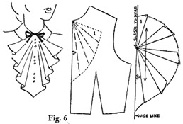

1942—Modern Pattern Design
by Harriet Pepin
Chapter 6—Capes, Ties, Neckwear and Scarves
Analysis of Cape Slopers
The modern cape is a direct descendent of the "Toga" worn by Romans in the early days. It comes and goes in fashion popularity but it seldom completely disappears from the fashion horizon. In fact, some women insist upon having a cape in their wardrobe because it is distinctly becoming to women having regal carriage. It is a favorite wrap of actresses and other individuals who have a dramatic personality. When properly cut, the cape is beautiful and flattering, but when badly cut, it is ugly and unattractive. It is not the garment for timid, apologetic types of women who are short and round shouldered. To wear a cape well, the woman must wear it with confidence, safe in the assurance that it becomes her.
There are two basic silhouettes—the Dolman and the Circular. These two basic silhouettes or a combination of the two, form the basis for most cape designs. The first produces a rectangular silhouette which hangs from the shoulders. The second forms a triangular silhouette which widens like a tent at the base. The length of the cape is important to current fashion. A cape may reach to the level of the bust or extend down to the floor or at any point between these levels. When the cape does not entirely cover the dress, it is highly important which cape silhouette is selected to complement the ensemble. Selected clippings showing capes of various lengths and silhouettes should be collected and sorted according to the type of garment being worn beneath. This will give the design student a conception of the possibilities and limitations in using capes. It is also suggested that a study be made of the use of capes throughout the history of fashion. You will find it a most interesting study as well as a source of new ideas for modern cape designs. A collection of capes used for military wear or those found in certain native costumes should be in every student's personal reference library.
When capes are fashionable, many dresses are designed which suggest cape effects by loose circular sleeves, deep pleated flounces attached to shoulder yokes, et cetera. To be practical, such dresses must be worn under cape wraps or the sleeves would become mussed. In the autumn of 1941, the American designers offered many exquisite fur coat designs which were actually variations of the Dolman cape. Because that same autumn there was a revival of the Dolman shoulder, it was natural that the wraps should be designed to accommodate these new sleeves.
The two following sloper patterns—the Dolman and the Circular types—are all that are necessary to produce an unlimited number of cape designs having varying proportions. Necklines and collars used for dresses and coats are equally versatile in cape designs; pleats, yokes, shaping seams, or other garment features may be made a part of a cape design. The important factor is to provide the proper shaping over the bust and shoulders when it is needed in the capes having narrower silhouettes.
How to Take Measurements for Capes
It is more convenient to take all cape measurements to the floor. The finished length can then be estimated as being so many inches from the floor. That amount can then be subtracted from all vertical measurements.
1. Center Front Length: Take from center front base of neck to floor.
2. Center Back Length: Take from center back base of neck to floor.
3. Side Length: Take from shoulder neck point, across shoulder, down over outside of arm to floor. See Fig. 1.
4. Bust-Arm: Take around arms and body in line with bust. See Fig. 1.
5. Hip-Arm: Take around arms and body in line with largest portion of hip. See Fig. 1.
Drafting the Dolman Cape
Front Section: Plan for cape 20 inches from floor, for hip-length.
1. Review instructions given in bodices and make draft shown in Fig. 2. Label as illustrated.
2. Extend center front line distance equal to Center Front Cape Measurement less distance from floor. Label point 12.
3. Line A-10 is one-fourth of Bust-Arm Measurement. It is squared from center front line on level with point 8. In size 14, place point 10 two inches from point 8. (In standard sizes, it is assumed that Bust-Arm Measurement will exceed normal bust measurement by eight inches. Hence 2 inches is used here.)
4. Line 1-11 is one-fourth Hip Arm Measurement. It is squared from center front line on a level with point 9. (In standard sizes, it is assumed that the Hip-Arm Measurement should be 10 inches greater than the normal hip measurement. Hence, in a size 14, point 11 would be placed 2 1/2 inches beyond 9.)
5. Square line from 12. Connect points 10, 11 and 13 with squared line from A to 10. Extend side seam line and shoulder seam line to intersect. Describe shoulder curve.
1. Draw vertical guide line and place sloper against it as shown in Fig. 3. Trace around sloper and label points as illustrated.
2. Extend center back line 2-1 downward distance equal to Back Cape Measurement less the desired distance from floor. Mark point 11.
3. Locate points 9 and 10 as you did in front section. Complete draft for the back and check side seam lengths of each section. Curved shoulder lines should be identical.
NOTE: Fig. 4 shows method of building up finished draft for insertion of padding to create broader shoulder appearance. The Side Cape Length Measurement is not used when making the Dolman cape except as a means of checking bulk of the dress when cape is being designed for an individual. It is an important measurement when drafting the circular cape shown below.
Maximum bust control must be placed at the shoulder to prevent cape sagging at side. Small back shoulder dart is also essential to good fit in that section.
Drafting the Circular Cape
The Circular cape offers more freedom to the wearer and is generally more becoming than the simple Dolman. This draft produces a garment which has a flat back and front with the circular fullness flaring from the shoulders. It is adaptable to varying lengths and when the basic side seams are eliminated and a center back seam used, it offers interesting ideas for layout of the fabric. Later problems will show methods used for removing some of the fullness or adding fullness to exaggerate the silhouette.
NOTE: Plan this draft to extend to the hip level. Take the Front, Back and Side Cape Length Measurements directly from your model form. Add 1/2 inch to the side measurement to allow for arm. Naturally, when the measurements are being taken from an individual, this extra allowance would not be added.
The waistline bodice sloper which has all control eliminated at the shoulder is the basis for this draft. As hip circumference measurements are not considered, the waistline bodice slopers are sufficient.
1. Arrange slopers as illustrated. Trace and label.
2. Extend center front line A-B until it equals your planned Center Front Measurement.
3. Extend center back line C-D until it equals your planned Center Back Measurement.
4. Extend shoulder line E-F until it equals your planned Side Length Measurement.
5. Square guide lines from points 1, 2, and 3 to intersect at points 4 and 5.
6. Connect points 4 and 5 with shoulder point F.
7. Locate points 6 and 7 the same distance from F that point 3 is from point F.
8. Connect 1, 7, 3, 6, and 2 with a sweeping circular line. Mark notches on seam line F-3.
The small shoulder dart is retained at the back neckline. This could be removed by folding and slashing upward from lower edge to dart point. But, this would throw extra folds up to the shoulder blades which might cause the wearer to appear round shouldered. It is for this reason that many circular cape designs provide for a round, square or pointed yoke which shifts the shoulder control into the seam and permits further degree of flare being added below the yoke as desired.
This simple draft is particularly adaptable to short capes which extend only to the waistline. It provides plenty of room for movement of the arms and retains the contour of the flat back and shoulders of the wearer.
Following are interesting adaptations of this Circular and also the Dolman cape which produce exaggerated silhouettes that are influenced by fashion of the season.
When muslins are made for these two drafts, compare them carefully from all angles while they are draped on the model form.
Variations of Dolman and Circular Capes
The above adaptation of the Dolman draft is a cape which was typical between 1935 and 1940 when the silhouettes of the dresses were emphasizing bulk through the shoulders. The puffed shoulder of the cape reflected the current silhouette and also provided ample room for the sleeve of the garment being worn beneath. Note that a small amount of width was added at the side seams and then these two sections were assembled to eliminate the side seam, leaving a remaining shoulder dart.
Below we have a youthful style of cape which might be made of taffeta or net to accompany an evening gown. Some of the flare at the side has been folded out up to the yoke edge, which extends to the shoulder tip (A, B and C).
When the sweep of the lower edge has been thus established, the gathers which are to appear at the yoke are introduced by slashing and spreading the pattern.
CAPE VARIATIONS
Silhouettes, lengths, fullness and necklines of capes may show wide variation. Though essentially classified as a wrap to be used instead of a coat, the variety of fabric is not especially limited either. Many of the basic principles of pattern making which you have studied in these previous pages may easily be applied in the designing of capes. As a medium for combining fur and fabric, or as a decorative accessory to a garment, opportunities for design interest are quite unlimited.
TIES, SCARVES, BOWS AND JABOTS
Cravat (Figure 1): Although it is commonly believed that the cravat is of English origin, research proves that it was first worn by the middle class Dutchmen in about the year 1660. Shortly after that, it became generally popular with both the English and the French. By that time, it appeared with many elaborations of lace and brocade and was favored by gentlemen of the court. The modern adaptation of the cravat is about 21 inches long and 9 inches wide with slight shaping in the center. It is tied in a simple overhand knot with ends spread.
Windsor Tie (Figure 2): This soft bow tie was popular in this country in about 1860 by men who wished to be recognized for their tendency towards Bohemian-ism. It is about 45 inches in length, cut on true bias and is finished at 7 inches width.
Four-in-Hand (Figure 3): This tie is conventional for men and is worn by women as an accessory to riding apparel. In accompanying diagram, dotted lines show the fabric and heavy lines show interlining. The small tabs are the partial linings to be made of satin.
Stock Collar (Figure 4): This standing collar with attached cravat was originally just the collar portion at the time the Ascot was in fashion for men. Later the tabs were added and for many years during the period between 1750 and 1850 it was the popular neck dress for men and for riding habits for women. Today, the standing collar with the tabs and the scarf are cut in one piece and are used as an accessory to formal riding apparel for both men and women. The small slit in the center back permits passing an end through to eliminate bulk and when tied in an overhand, the wide ends complete the appearance of the cravat. In some instances, it is confused with the English Ascot due to the similarity in appearance when worn. It is the true English Ascot which is worn by men as an accompaniment for formal morning attire.
Bows in Fashion
To some women, the mere suggestion of a bow being used on a dress would suggest dowdiness and would meet with their immediate refusal of such an idea. Yet, some of the more smartly dressed, sophisticated women wear garments which include the use of a single bow, or a series of bows. The question is not the use of a bow, but what sort of bow which should be used for the type of garment or the type of woman.
Milliners soon become aware that the art of tying a bow is an important factor in creating trimmings for hats. There are several factors to be considered when using a bow for trimming. First, the finished effect desired is dependent upon the fabric which will be used. The bow which is to give a youthful effect cannot be made from too pliable a fabric or ribbon. Artificial stiffening would only give a stilted effect. Second, the age of the wearer of the garment. Third, the size of the wearer. A large woman will not benefit from a soft, bulky, youthful French bow, while a trim, tailored bow of the right size to scale with her size, might give the impression of trimness which her clothes need.
Fig. 1 shows the popular "shoe-string" type, made from either a bias or straight tubing, with finished ends, pressed flat. It is usually best to make the strip and then use an additional piece to simulate the knot. It may be tacked together and it may be then quickly ripped apart for laundering and assembled again.
Fig. 2 shows another variation for a tailored bow used in a similar manner. It is like the bow-tie men wear with dinner jackets, cut and shaped, or it may be made in sections with the idea of saving material.
Fig. 3 shows the "boxy" bow resembling the "shoe-string" style which is often made from grosgrain ribbon. A series of such tailored bows, properly spaced at intervals down the front of an otherwise simple dress can create a slenderizing effect without creating a "fussy" appearance.
The semi-soft, "French" bow is frankly youthful. It might be made in sections, from scraps of leftover material, or from a straight piece of fabric or crisp ribbon which ties easily. For the thin, angular woman, a series of these nicely proportioned bows would give a little added bulk without being too youthful. Observe how it gives the evening gown a youthful feeling when used with a sash. Fig. 4.
Fig. 5 shows the third classification of bows. We shall call it the "scarf" bow because it becomes more of a scarf than a bow as it is so soft that it has a droopy, scarf-like effect. You can readily visualize how such an effect, when seen on a child's dress, is despondent and unattractive. That is because this bow might be said to be glamorous, and mature appearing. Yet, when it appears on a sophisticated evening gown of chiffon, or a negligee, it suggests dignity and can be a very pleasing addition. Naturally, the effect is achieved through the use of a very soft velvet or chiffon.
Start now to clip illustrations showing the clever use of bows in garment design. Become intelligently "bow conscious." Divide your clippings into the three basic classifications and paste them on extra sheets. You will find this research most enlightening!
Detachable and Attached Jabots
The modern jabot (pronounced Zha-bo) is the outgrowth of the cravat which became elaborately decorated with ruffles and lace. Today it is no longer found in the men's wardrobes but is an accessory to women's garments. Like bows, the jabot may be limp and lacy or it may be crisp and trim. Its appearance and character are dependent upon the fabric and trimming.
The accompanying illustrations show the method used for producing pleasing jabots. The first step is to get a construction pattern of the general outline. Then the ripples are introduced through slashing and spreading. When a series of ripples are to appear, (Fig. 7), the section containing the design for them is slashed all in one piece and then the pattern for each section is traced off separately.
Ample hem and seam allowance is then added. This will produce a cascade of circular ruffles all of which will have identical ripples which follow a line downward. This eliminates a confusion of meaningless ripples and will produce a more attractive finished jabot.
Detachable and Attached Revers
Fig. 8: Horizontal slashes produce horizontal ripples in jabot. This style better suited to crisp fabrics.
Fig. 9: Slashes must merge at center front neck point. This style also suited to soft fabrics as well as crisp ones.
The fact should not be overlooked that the neckwear manufacturing industry, as an accessory to the entire garment industry, stands in a class by itself. Manufacturers of dresses and suits purchase thousands of finished pieces of neckwear which are applied to their garments. Then, the neckwear designer also alertly follows the prevailing changes in necklines as they appear from season to season in order that she may offer a wide choice of new, interesting designs which will reach the consumer through the counters of the department stores and specialty shops. Neckwear designing requires a specific talent for fine details. The writer has observed, in teaching students who are preparing for careers in the field of fashion, that individual students may reveal a marked aptitude for this single field of designing. Neckwear is an important part of every business woman's wardrobe and thousands of dollars are invested yearly for these dainty bits of lingerie that will give the up-to-the-minute look to some basic dress that is being mustered into service for a second season.